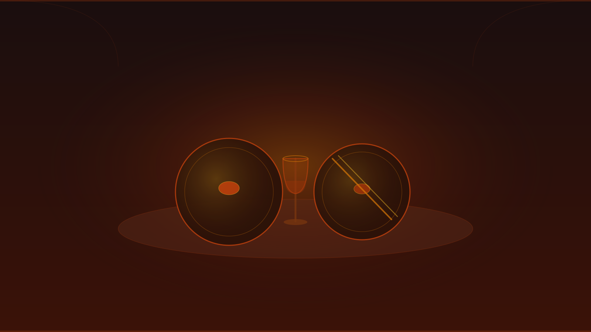
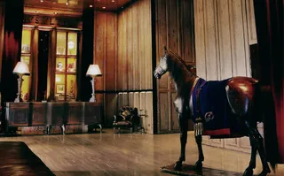
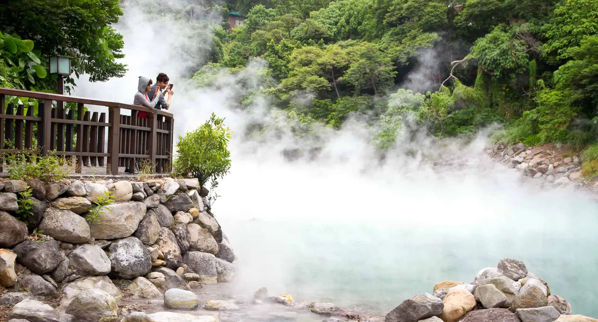

Taipei · 週末旅行指南 · Field Guide
WEEKEND AROUND
THE MICHELIN TABLE
2 days anchored on a starred dinner — what to book first, how to pace the days, and what June changes

01Start Here — Book the Restaurant First
The reservation is the anchor. Build the weekend around it — not the other way around.
Taïrroir (★★★, world's first Taiwanese 3-star) [4] fills 4–8 weeks out — it sets the date. Le Palais (★★★, Cantonese, 8 consecutive years) [5] accepts same-day concierge calls — flexibility if you can't commit far ahead. Either way: book first, then plan. [22]
⚠ COMPUTEX ran June 2–5 across TaiNEX & TWTC [18] — Xinyi-district restaurants sell out and ride-share pricing surges. Avoid booking your anchor dinner in that window.02Three-Star Options — Your Headline Dinner
Taïrroir 態芮
Modern Taiwanese · Zhongshan District · Chef Kai Ho
World's first three-star Taiwanese restaurant. [4] Dishes named for Taiwanese idioms, sourced from local farms, shaped through French technique. La Liste 2026: 95 pts. Plan to book 4–8 weeks ahead; often fully committed.
Book at tairroir.com →
Le Palais 頤宮中餐廳
Classic Cantonese · Palais de Chine Hotel, Datong District
Taipei's most storied three-star. Classic Cantonese at the highest level: roast duck (order whole bird ahead), har gow, braised abalone, bird's nest. Widest price range of any starred restaurant in Taipei. [5] Dim sum à la carte from NT$380; full tasting sets NT$4,880–NT$24,880 +10%.
Reserve via hotel →03Two-Star Options — Best Creativity-to-Price
L'Atelier de Joël Robuchon
French · Xinyi, Bellavita 5F
NT$2,380–6,880
32-seat counter around open kitchen. Lowest price point of any starred venue. English-friendly; easiest online booking.
Book online →logy
Japanese-Asian fusion · Neihu
NT$4,750 tasting
Chef Ryogo Tahara: Hokkaido × Taiwan × Italy. Best creativity-to-price ratio. Dinner Wed–Sun, lunch Fri–Sun. Book 4–6 weeks out.
Book at logy.tw →Molino de Urdániz
Spanish · Zhongshan, Hotel MVSA
NT$3,980–5,680 +10%
Taiwan's only starred Spanish restaurant. Michelin Green Star for sustainability. Via OpenTable. Closed Mon.
OpenTable →Mudan 牡丹
Tempura Kaiseki · Da'an
NT$7,500+ per course
2 sittings only (12:30 / 18:30). No walk-ins. Reserve weeks ahead. Closed Mon.
Book at site →Eika 盈科
JP-TW Kaiseki · Datong (Dadaocheng)
from NT$2,000+
Chef Ryohei Hieda redefines kaiseki with Taiwanese ingredients. 1→2 stars in one year. Dinner Wed–Sun only.
AutoReserve →Yu Kapo 彧割烹
Japanese Kappo · Songshan
$$$$ (call to confirm)
Taiwan's benchmark kappo. Chargrilling + kamameshi rice-pot as signature. Very limited seats — Facebook/phone only.
Michelin page →Restaurant A
French-Asian · Da'an, Shin Kong Mitsukoshi 4F
10-course tasting (drinks incl.)
Chef Alain Huang. Gallery-white space with seasonal floral installation. Wine or alcohol-free pairing included.
Michelin page →All 9 Restaurants at a Glance
| Restaurant | ★ | Cuisine | District | Price / person | Closed | Lead time |
|---|---|---|---|---|---|---|
| Taïrroir 態芮 | ★★★ | Modern Taiwanese | Zhongshan | ~NT$9,000 | Tue–Wed | 4–8 weeks |
| Le Palais 頤宮 | ★★★ | Cantonese | Datong | NT$4,880–24,880+ | — | Same-day OK |
| L'Atelier de Joël Robuchon | ★★ | French | Xinyi | NT$2,380–6,880 | — | Days ahead |
| logy | ★★ | Japanese-Asian | Neihu | NT$4,750 | Mon–Tue | 4–6 weeks |
| Molino de Urdániz 🌿 | ★★ | Spanish | Zhongshan | NT$3,980–5,680 +10% | Mon | Days ahead |
| Mudan 牡丹 | ★★ | Tempura Kaiseki | Da'an | NT$7,500+ | Mon | Weeks ahead |
| Restaurant A ✦ | ★★ | French-Asian | Da'an | Tasting (call) | — | Confirm |
| Eika 盈科 ✦ | ★★ | JP-TW Kaiseki | Datong | NT$2,000+ | Mon–Tue | Confirm |
| Yu Kapo 彧割烹 ✦ | ★★ | Japanese Kappo | Songshan | $$$$ (call) | — | FB/phone |
✦ = new 2-star in 2025 guide · 🌿 = Michelin Green Star · Prices TWD · +10% service where noted · 1 USD ≈ 32 TWD · Source: Michelin Guide Taiwan 2025 [1]
04Weekend Day-by-Day — Paced Around the Dinner
Key rule: keep the dinner day light. Don't pile a long day-trip onto Day 2 before a tasting menu. Group activities by MRT cluster — Taipei's hub-and-spoke metro means sequencing matters more than distance. [25] [22]
Longshan Temple 龍山寺
Founded 1738 · Free · MRT Longshan Temple (Blue), 30-sec walk. Buddhism + Taoism + folk religion under one roof. [29]
CKS Memorial Hall
Free · 09:00–18:00 · Hourly guard change 10:00–17:00. Monumental civic plaza — "huge, super impressive." MRT CKS Memorial Hall (Green or Red). [20]
Lunch + Ximending
Beef noodle soup nearby, then wander Ximending — Taipei's Harajuku, liveliest on weekends. [25]
Dihua Street / Dadaocheng
Taipei's oldest street: dried goods, herbal-medicine shops, tea sellers, free traditional-dress dress-up, riverside sunset. Walk distance to Ningxia night market.
Elephant Mountain or Taipei 101
Elephant Mountain: free 180m climb, face-on 101 skyline at golden hour (crowded). [30] Or: 101 Observatory NT$600, 89F in 37 seconds. [19]
Night Market Dinner
Raohe (food lovers' pick, Bib Gourmand pork bun) or Ningxia (compact, multiple Bib Gourmand stalls). See Night Markets section below. [27]
Early Breakfast
Fuhang Soy Milk (Bib Gourmand, est. 1958): thick soy milk NT$30, shaobing, youtiao, dan bing. Arrive early — lines form fast.
Beitou Hot Springs
Under 20 min by MRT (Red Line → Xinbeitou branch). Free Thermal Valley to see; private onsen rooms to book; 2–3 h soak. Best low-pressure activity before an evening tasting menu. [21]
Light Lunch Only
Nothing heavy before a tasting menu. A tea house (Wistaria, Da'an), specialty coffee, or small snack. Keep it relaxed — this is prep time, not another activity.
Return to Hotel — Rest & Change
Smart casual is the standard dress code at most starred venues here.
★ YOUR MICHELIN DINNER
The anchor. The Michelin restaurant cluster (Taïrroir in Zhongshan, Le Palais near Taipei Main, most 2-stars in Da'an/Xinyi) sits within 2 MRT stops of the major Day 2 sights — logistics handle themselves. [25]
05Night Markets — Pick One for Day 1
Ningxia 寧夏
Local favourite. Small but dense with Bib Gourmand stalls. [28] Good pairing with a Dadaocheng afternoon — walkable.
Yuan Huan Pien oyster omelet · Fang Chia chicken riceShilin 士林
Largest and most touristy. Arrive before 19:00 to beat the peak crowd. Best for: first-timers who want the full spectacle and don't mind tourist-level pricing.
Large fried chicken fillet · flame-grilled cube steak06Add a Day 3? — Escape Options
Dedicate a full non-dinner day. June caveat: heavy afternoon showers — prefer MRT-accessible or morning-first plans. [24]

Beitou Hot Springs
<20 min MRT · Half-day · Free + optional onsen
Sulphur springs, turquoise thermal valley, bookable private onsen rooms. Works in any weather — steaming hot springs in rain is atmospheric. [21]
Maokong 貓空
Wenhu MRT + gondola NT$70–120 · Half-day
4-station gondola to hillside teahouses. 40+ teahouses along Lane 38 — Baozhong and Tieguanyin oolongs, some with 101 views. MRT-accessible, rain-friendly. [31]
Yangmingshan
Bus S15 from Jiantan MRT · Full day
Volcanic fumaroles at Xiaoyoukeng, free springs at Lengshuikeng, Qixing summit (1,120m, 2–3 h hike). Reads well in June mist — safer bet than north-coast viewpoints.
Hot, humid, and shower-prone — the primary variable in day-trip viability. [24]
Pack: light breathable fabrics · foldable rain jacket · sun protection · comfortable walking shoes. Jiufen mountain alleys = atmospheric in cloud. North-coast viewpoints may close. Yangmingshan volcanic terrain = fine in mist.
Practical Logistics
Explore the Full Research